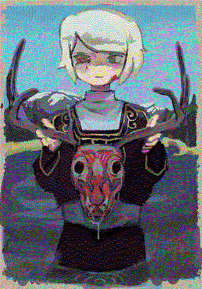
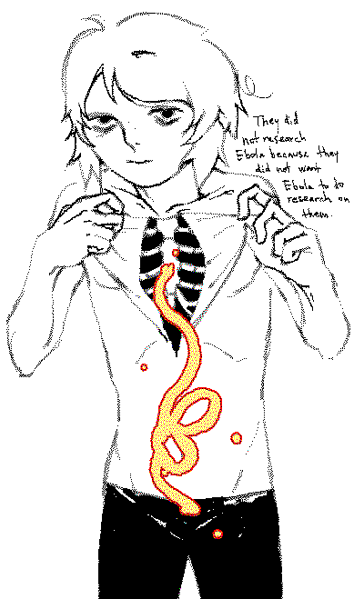
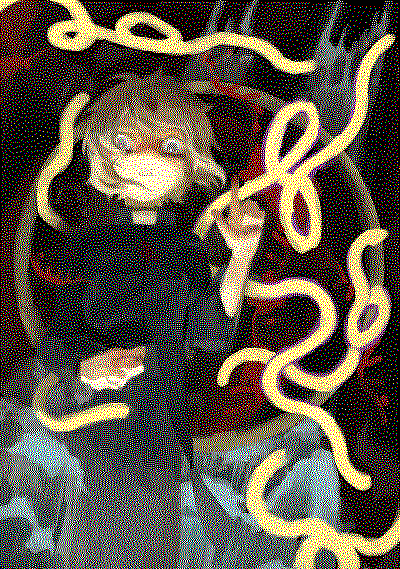
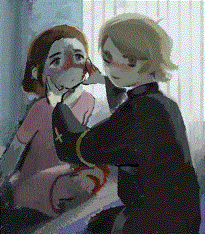

chouette-ebola
A compendium of Chouette (my character) and accompanying quotes from medical drama novels about Ebola
Why, you may ask. I originally came up with Chouette in early 2021 as an excuse to draw cool-looking Christian imagery, and also to have a character that is evil for the sake of being evil, not necessarily because of any trigger in his life. I'm aware that it isn't a novel concept at all, but he's been very fun to draw. A while ago, I also got very invested into medical thriller novels, specifically Richard Preston's The Hot Zone and The Demon In The Freezer[1]. Say what you will about the scientific accuracy of these books (and the negative implications they likely had on science communication as a whole), but Preston can write about filoviruses like no one's business. I like thinking of Chouette as a virus — always mutating, oppressively single-minded, of a primordial order which plays by slightly different rules than everybody else.
“Many men with hemophilia have died of AIDS, having received blood transfusions tainted with HIV during the years when blood wasn’t tested for it.”
“Death from Ebola comes about five to nine days after you break out with symptoms, and it occurs with spurts of blood coming from the orifices and a collapse of blood pressure, an event that Army people call the crash and bleed-out. In some cases, the virus causes a near-total loss of blood—an Ebola exsanguination.”
“He served as a consultant to emergency planners in New York City, and he kept a strip of reflective tape on the roof of his car, so that in the event of a bioemergency the state-police helicopters could find him.”
“Smallpox was the only disease we know of for which there were deities,” he said. “It was the worst human disease. I don’t know of anything else that comes close.”
“They did not care to do research on Ebola because they did not want Ebola to do research on them.”
“The classic Ebola face made the monkeys look as if they had seen something beyond comprehension. It was not a vision of heaven.”
“‘Do you find viruses beautiful?’ ‘Oh, yeah,” he said softly. “Isn’t it true that if you stare into the eyes of a cobra, the fear has another side to it? The fear is lessened as you begin to see the essence of the beauty. Looking at Ebola under an electron microscope is like looking at a gorgeously wrought ice castle. The thing is so cold. So totally pure.’ He laid a perfect cast on the water, and eddies took the fly down.”
“They were the discoverers of the strain, and it seemed that they would have the chance to give it a name, provided they could isolate it, and provided it didn’t isolate them first.”
“In 1976, when Ebola broke out in Yambuku that first time, there was a nun, Sister Beata, who died of Ebola,” Close recalled. “There was a priest, Father Germain Lootens, who gave her the last rites as she died. She had a terrible fever, sweat was pouring down her face, and bloodstained tears were running down her face. Father Lootens took out his handkerchief and wiped the sweat from her forehead and the bloody tears from her face. Then, unthinkingly, he took the tearstained handkerchief and wiped the tears from his own face with it—he had been crying, too. A week later, he came down with Ebola, and a week after that he was dead.” Excerpts from The Hot Zone by Richard Preston and Level 4: Virus Hunters of the CDC by Joseph B. McCormick